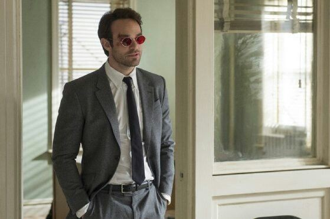
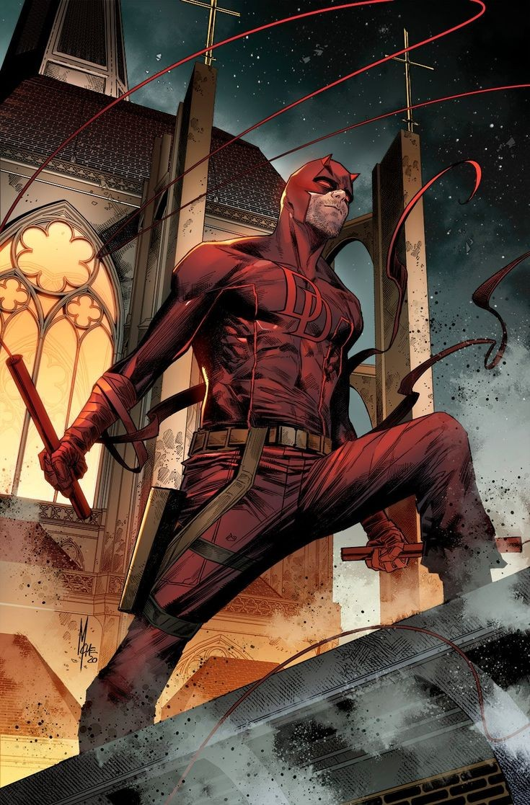
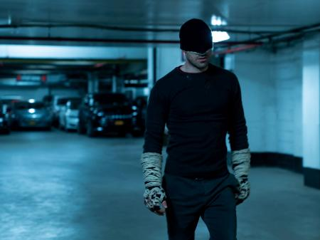

Início - Curiosidades - Habilidades -
A história do Demolidor nas HQs da Marvel remonta à década de 1960, quando o personagem foi criado por Stan Lee e Bill Everett. Sua primeira aparição ocorreu na revista "Daredevil #1", lançada em 1964.A história original de Matt Murdock, o Demolidor, é semelhante à retratada na série de TV e na Netflix que é interpretado pelo o astro Charlie Cox,e seu amigoo e colega de faculdade, Foggy Nelson (interpretado por Elden Henson).
Murdock era um jovem garoto que salvou um idoso de ser atropelado por um caminhão. No entanto, durante o incidente, um barril contendo resíduos radioativos derramou-se sobre ele, cegando-o permanentemente. No entanto, o acidente aumentou drasticamente seus outros sentidos, dando-lhe habilidades sobre-humanas. Após a tragédia, Matt Murdock foi criado por seu pai, Battlin' Jack Murdock, um lutador de boxe. Inspirado pelo pai, Murdock treinou arduamente e se tornou um advogado, decidindo usar suas habilidades para combater o crime como o vigilante mascarado conhecido como Demolidor.Ao longo dos anos, o Demolidor enfrentou uma série de inimigos icônicos nas HQs. Um dos principais vilões do Demolidor é o Rei do Crime, Wilson Fisk, um gângster poderoso e implacável que governa o submundo do crime em Nova York. Fisk se tornou um dos arqui-inimigos mais recorrentes do Demolidor e uma figura central em muitas histórias do personagem. Outro personagem importante na história do Demolidor é Elektra Natchios, uma assassina treinada que também é amor e interesse romântico de Matt Murdock. A relação complicada entre Murdock e Elektra é explorada em várias histórias, e ela frequentemente oscila entre ser uma aliada e uma adversária do Demolidor.A vida dupla de Matt Murdock como advogado e vigilante também é um tema constante nas HQs do Demolidor. Ele enfrenta desafios em equilibrar suas responsabilidades profissionais com suas atividades noturnas e luta para manter sua identidade secreta enquanto protege Hell's Kitchen.As histórias do Demolidor nas HQs são conhecidas por sua abordagem mais sombria e realista em comparação com outros heróis da Marvel. O personagem é frequentemente retratado lutando contra a corrupção, a injustiça e os problemas sociais em uma escala mais pessoal e urbana.Ao longo dos anos, o Demolidor teve várias séries em quadrinhos dedicadas exclusivamente a ele, muitas delas aclamadas pela crítica e premiadas. Sua história continua a evoluir e expandir no universo Marvel, com novas tramas, aliados e adversários sendo introduzidos regularmente. O personagem é considerado um dos mais populares e respeitados da Marvel Comics.
Características: O Demolidor, também conhecido como Matt Murdock, possui uma série de características que o tornam um personagem único e icônico. Aqui estão algumas das principais características do Demolidor:Habilidades aprimoradas: O acidente que causou sua cegueira também ampliou seus outros sentidos de forma extraordinária. Ele possui audição, olfato, tato e paladar superdesenvolvidos, permitindo-lhe perceber o mundo de maneiras que os seres humanos comuns não podem.Sentido radar: Uma de suas habilidades mais distintivas é o chamado “sentido radar”. Ele pode emitir ondas sonoras de alta frequência que se propagam pelo ambiente, permitindo-lhe “ver” tudo ao seu redor através das ondas sonoras refletidas. Essa habilidade dá a ele uma percepção tridimensional do ambiente, permitindo que evite obstáculos e detecte a posição de seus inimigos.Habilidades marciais: O Demolidor é um lutador habilidoso em várias formas de artes marciais. Ele foi treinado por Stick, um mestre de artes marciais cego, e aperfeiçoou suas habilidades ao longo dos anos. Sua destreza física combinada com seu sentido radar o torna um oponente formidável em combate corpo a corpo.Equipamentos especiais: O Demolidor usa uma série de equipamentos especiais em sua luta contra o crime. Isso inclui seus bastões de combate retráteis, que ele usa tanto como armas ofensivas quanto para ajudá-lo a se locomover, além de um traje especial que oferece alguma proteção contra ataques físicos.Identidade dupla: Matt Murdock leva uma vida dupla como advogado durante o dia e vigilante à noite. Ele usa sua profissão como advogado para ajudar os menos afortunados e combater a injustiça no sistema legal. Essa dualidade entre sua vida pessoal e sua vida como Demolidor é uma parte fundamental de sua história.Código moral rígido: O Demolidor tem um forte senso de justiça e um código moral rígido. Ele acredita firmemente em proteger os inocentes e combater o crime, mesmo que isso signifique sacrificar sua própria felicidade e enfrentar desafios pessoais.Vulnerabilidade emocional: Embora seja um herói corajoso e determinado, o Demolidor também é retratado como um personagem vulnerável emocionalmente. Ele enfrenta dilemas morais, lutas internas e traumas passados, o que o torna um personagem mais complexo e humano.Essas são apenas algumas das características que tornam o Demolidor um personagem fascinante e cativante. Sua história de superação, sua luta pela justiça e suas habilidades únicas o colocam entre os heróis mais queridos do universo Marvel.
Descrição: O Demolidor, também conhecido como Matt Murdock, é um personagem fictício da Marvel Comics. Ele é retratado como um homem de altura média, com físico atlético e cabelos escuros. A principal característica visual do Demolidor é o seu traje distintivo.O traje do Demolidor consiste em um traje de corpo inteiro, geralmente nas cores vermelho e preto. O traje é feito de um material resistente, proporcionando alguma proteção contra ataques físicos. O peito e as costas do traje geralmente têm o emblema do Demolidor, que é um “D” estilizado.A parte mais reconhecível do traje do Demolidor é a máscara que ele usa para cobrir os olhos. A máscara é de cor vermelha e geralmente tem duas aberturas para os olhos, que são cobertas por lentes opacas ou pretas. Essas lentes opacas são uma representação visual de sua cegueira.
A máscara também tem pequenas aberturas para o nariz e boca, permitindo que o Demolidor respire e fale normalmente. O restante do rosto do Demolidor é geralmente exposto, revelando sua expressão determinada e mandíbula quadrada.Em termos de expressão e postura, o Demolidor é frequentemente retratado como um herói sério e focado. Ele possui uma expressão determinada e um olhar intenso, refletindo sua dedicação em combater o crime e proteger os inocentes.No que diz respeito às suas habilidades aprimoradas, o Demolidor pode ser retratado com os sentidos ampliados, como audição aguçada e olfato apurado. Em algumas representações, ele também pode ser mostrado com pequenas marcas cicatrizadas ou ferimentos que são resultado de suas lutas contra o crime.No geral, a aparência do Demolidor reflete sua identidade dual e sua luta pela justiça. Seu traje icônico, máscara e expressão determinada o tornam um personagem facilmente reconhecível e um dos heróis mais distintos da Marvel Comics.
Nomes: O Demolidor, também conhecido como Matt Murdock, tem vários nomes pelos quais é chamado ao longo das histórias em quadrinhos e outras mídias. Aqui estão alguns dos nomes mais conhecidos do Demolidor:Demolidor (Daredevil, em inglês): Esse é o nome principal pelo qual o personagem é conhecido. Refere-se à sua identidade de vigilante que combate o crime à noite.
Matt Murdock: Esse é o nome real do personagem, que ele usa em sua vida cotidiana como advogado e cidadão comum.O Homem sem Medo (The Man Without Fear, em inglês): Esse apelido é frequentemente associado ao Demolidor devido à sua habilidade de enfrentar perigos e desafios sem demonstrar medo.O Advogado do Diabo (The Devil's Advocate, em inglês): Esse nome destaca a dupla identidade de Matt Murdock como advogado e vigilante mascarado. Ele utiliza seu conhecimento da lei para buscar justiça tanto nos tribunais como nas ruas.Guardião de Hell's Kitchen (Guardian of Hell's Kitchen, em inglês): Hell's Kitchen é o bairro de Nova York onde o Demolidor atua, e ele é frequentemente referido como o Guardião de Hell's Kitchen, protegendo os inocentes e combatendo o crime na região.Diabo Vermelho (Red Devil, em inglês): Esse apelido destaca a aparência e a cor do traje do Demolidor, que é predominantemente vermelho. O termo "Diabo" refere-se ao seu estilo de combate feroz e implacável.Esses são alguns dos nomes pelos quais o Demolidor é conhecido. Cada um deles ressalta diferentes aspectos do personagem e sua atuação como herói vigilante.
| Fraquezas | Vantagens | Aliados |
| Sons Exremamamente Altos | Sentidos aguçados | Homem-Aranha |
| Cegueira | Habilidades Acrobáticas | Elektra Natchios |
| Danos físicos | Sentido radar | Punho de Ferro |
| Manipulação Emocional | Determinação e Força de Vontade | Jessica Jones |
| Limitações Humanas | Conhecimento Jurídico | Luke Cage |